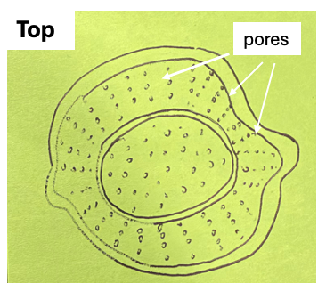
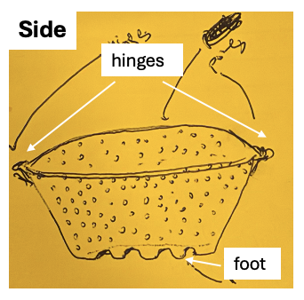

The cleanup
After a Chinese hotpot dinner at home, I was left with what every hotpot meal leaves behind — a pot of hot, oily broth full of solids. Bits of vegetable. Spent aromatics. Fragments of everything that had been simmering all evening. Before any of it could go in the trash, the liquid and the solids had to be separated. So I did what anyone does. I carried the pot to the sink and poured it through a strainer.
That one small act held three frustrations, one after another.
First, the draining. A pot of greasy broth going through a strainer in the sink is a messy, splashing job — the kind of thing you do carefully because it is hot and it spatters. Then, the strainer itself. Once the liquid was through, I was holding a strainer coated in chili oil and fat, solids caught in the mesh, and now that had to be scrubbed clean. One more greasy thing to wash, at the exact moment I wanted to be done and collapse into a food coma. And finally, the disposal. A handful of wet solids, and a decision about what went where — what belongs in the food waste bin, what does not, whether something this oily even qualifies. In a place with strict, separated waste collection, that last question is not trivial.
The meal had been the good part. The cleanup was a disproportionate tax on it. And the strainer — the tool that was supposed to help — had become one more thing to clean.
The idea
So here is the thought that would not leave me. What if the strainer were the thing you throw away?
A single-use strainer, molded from vegetable starch, that you drain your food waste through and then discard along with the solids it holds. No scrubbing, because there is nothing to keep. It collapses flat, so it takes almost no room in the bin. And because it is made from starch rather than plastic, it is designed to break down instead of persist. Three chores — drain, clean, dispose — folded into a single motion. Drain, fold, toss.
Today — reusable strainer
With the starch strainer
It is a clean idea. It is also, as it turns out, much harder than it looks.
The material
Start with the material, because the obvious approach is a trap. You cannot simply press starch powder into a bowl and call it done. Starch is the standard disintegrant in pharmaceutical tablets — the ingredient added on purpose to make a pill fall apart the moment it meets water. A pressed-powder strainer would dissolve in the first pour of hot broth. Thicker walls would only delay the collapse.
The trick is a phase change. Heat and moisture turn raw starch into a continuous solid — the same transformation that happens when batter bakes into a wafer. Then, as the part rests and conditions, the starch recrystallizes into a network that holds its shape at a far higher temperature than the one that formed it. Soup is hot. But it is not that hot. That gap — between the heat that shapes the strainer and the heat that would destroy it — is the entire product. Everything else is engineering around that one window.


So which starch? There is a short list, and each one sits somewhere between how well it survives hot soup and how little it costs.
| Starch | Amylose | What it offers |
|---|---|---|
| High-amylose corn | 50–70% | Holds its shape in heat best — the likely performance winner |
| Mung bean (nokdu) | 30–35% | Firmest of the traditional options; the glass-noodle starch, with a local story |
| Pea | ~35% | Food-grade co-product of pea-protein production |
| Dent corn | 25–28% | Cheap baseline to measure the rest against |
| Potato | 20–25% | Weakest in water; useful as a control |
And because starch in this state is stiff but brittle, the bowl probably needs a fiber worked in for toughness — something that adds strength without spoiling the disposal claim.
The way to settle it is not to argue. It is to test. Mold a flat disc of each, soak it in hot water, measure how much stiffness it keeps — then run the same test on a real plastic colander and a molded-pulp bowl, so the numbers mean something instead of floating in the abstract. A university food lab is the right first call. The equipment is already on the bench, and a molded starch bowl is exactly the kind of problem that belongs there.
The paradox
Then there is the harder problem, the one I did not see coming. The draining and the scrubbing, this thing solves cleanly — you pour into it, you throw it away, and there is nothing left in the sink. The disposal is where it gets interesting.
Take South Korea. There, food waste is not simply trash. It is separated from everything else, weighed, and recycled into animal feed, compost, and biogas. Households pay by the kilogram — there is a bin that weighs what you throw away and charges you for it. In a system like that, a strainer that pulls the water out of your food waste before it is weighed is not just convenient. It is a smaller bill, every month, on a cost people already resent.
And yet that same system is exactly what makes the elegant version of the idea hard. Here is the paradox. The place where the cleanup pain is sharpest is also the place where you cannot simply toss the strainer in with the scraps. Food waste is defined by origin — it has to have been food. A molded starch bowl, however pure, however edible it looks, was never food. It was a manufactured thing. Purity does not change origin. So the honest version of the product, at least for now, drains your waste and cuts its weight and spares you the scrubbing — and then goes in the general trash, while the work of making it truly disposable becomes a separate, slower fight with a national waste code.
That is a strange place to end up. I started at a kitchen sink, annoyed. I ended up reading about how a country legally defines the word food.
The Korean question
The material is a problem you can solve on a bench. The market is harder. There are two honest ways into Korea, and they lead to very different products. The first is to ship it now, as exactly what it is — a starch strainer, no plastic, that drains your waste and cuts its weight — and accept that for now it goes out in the general trash. That claim is true today, and it asks no one's permission. The second is slower and far cleaner. Register the strainer as a food, the way glass noodles and rice paper are foods. Make it as a food, and the moment you throw it away it is food waste by origin. The whole regulatory argument dissolves. It stops being a fight over what the thing is and becomes a matter of paperwork — but that route changes the factory, the license, and the cost, so its price has to be known before a single mold is cut.
Then there is the plain economics. The mesh net this replaces costs almost nothing, so the strainer will never win by being the cheaper thing to throw away. It has to win on what the cleanup actually costs you — no scrubbing, a lighter bill at the weigh-in, a disposal story that happens to be true. And the first customers are not the big families who generate the most waste. They are the single-person households, millions of them, the least willing to scrub and the easiest to reach. That is where it begins.
It is not the only biodegradable option, either. A biodegradable drain net already exists, and it found an audience. But it is still a limp net you fish out of the drain — the difference here is form and motion, not material. Line them up on the two things that actually matter — whether it breaks down, and whether it spares you the cleanup — and one corner sits empty.
One task is easy to overlook. A bowl made of starch, in a kitchen with children and pets, looks a little too much like food. That has to be designed against on purpose — an off-putting color, a bitter but food-safe coating, a warning pressed into the mold. The very thing that lets it break down is the thing that makes it tempting. You do not get to ignore that.
This is the part I keep coming back to. The everyday version of the problem is small — one annoying cleanup after a good meal. Pull the thread, and it runs all the way down to what a thing is made of, and all the way out to how a whole country decides to throw things away. A pot of leftover broth on one end. Material science and waste law on the other.
The idea is simple. Drain, fold, toss.